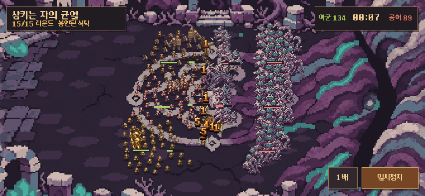
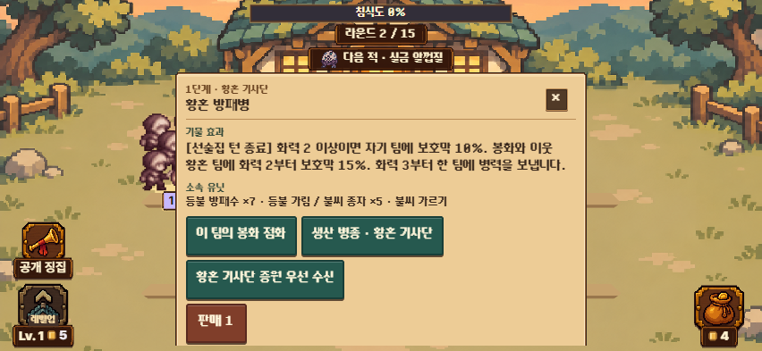
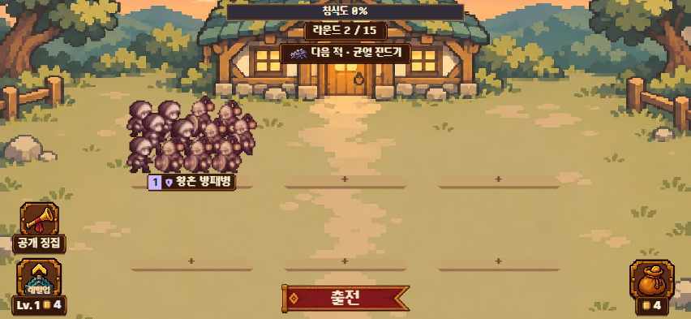
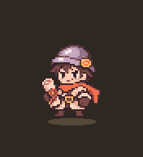
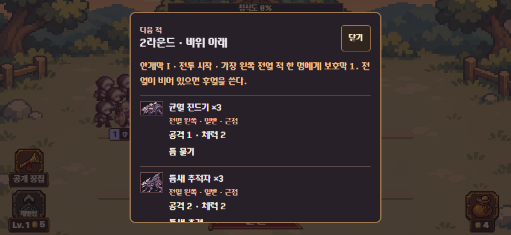
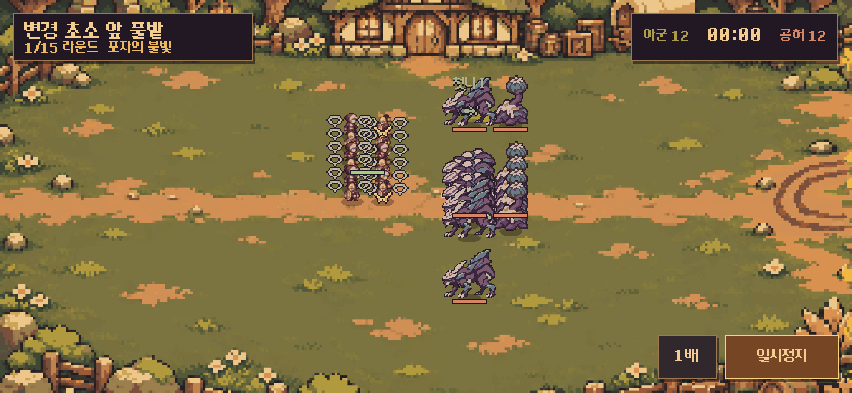

선술집에서 용병단을 모아, 침식이 세계를 덮기 전에 외신의 균열을 닫는 덱 빌딩 오토배틀러입니다. 오토체스에서 가장 살리고 싶었던 재미, 내가 떠올린 조합이 전장에서 통하는 순간을 혼자서도 여러 번 겪도록 선술집 고용과 덱 빌딩, 진형 자동전투를 15라운드 원정 하나로 묶었습니다.
훅 · 침식과의 경주
전투에서 아군이 모두 쓰러지면 세계의 침식도가 오르고, 100%가 되면 원정이 끝납니다. 늦은 라운드에서 질수록 더 많이 올라 1라운드는 +8%p, 15라운드는 +36%p입니다. 다음 선술집에서 쓰러진 기물과 증원은 복구되므로, 진 뒤에도 조합을 버리지 않고 고용과 배치를 다시 판단합니다. 15라운드에서 삼키는 자와 호위, 분열체를 모두 쓰러뜨리면 균열이 닫힙니다.
정산 · 이기면 침식도가 오르지 않습니다

15라운드 · 삼키는 자의 균열
핵심 선택 · 기물 간 시너지
계열마다 읽는 값이 하나씩 있습니다. 황혼 기사단은 봉화를 지핀 기물과 상하좌우로 붙은 황혼 기물의 화력을 읽고, 강철 군단은 같은 종류의 수레가 몇 대인지 봅니다. 조건을 채우면 선술집 턴 종료에 팀 전체가 강화되고 병사가 영구 합류합니다.

황혼 방패병 · 봉화 점화와 증원 대상

황혼 방패병 · 2명에서 12명으로
핵심 선택 · 대장과 기물의 연계
대장은 매 방문 쓰는 능력 하나와 전용 기물 세 장을 가져옵니다. 로언은 한 팀에 원하는 병종 2명을 계약해 보내고, 회랑 계약단 기물은 그 계약이 성사되면 보호막과 추가 병력을 받습니다.

로언 · 왼쪽 아래 버튼으로 모병
다시 할 이유 · 원정마다 바뀌는 공략
기본 4계열에 확장 계열 하나와 혼합팩 하나가 붙어 원정마다 아홉 조합 중 하나가 나옵니다. 라운드마다 다섯 적 편성 중 하나가 정해지고, 선술집에서 다음 적의 병종·수·권능을 미리 봅니다.

2라운드 다음 적 · 바위 아래
03
타깃 유저층
주 대상은 조합을 실험하는 플레이어입니다. 전략적 팀 전투(TFT)에서 팀을 궁리하는 시간을 즐기고, 자신이 고른 조합으로 혼자 보스에게 도전하고 싶은 사람을 떠올렸습니다.
핵심 · 오토배틀러 팬
평소 잘 쓰지 않던 기물도 효과가 맞물리면 써 보고 싶은 사람입니다. 15라운드 보스는 자신이 고른 조합이 어디까지 통하는지 확인할 목표가 됩니다.

왼쪽의 아군 분대가 오른쪽 공허군과 첫 교전
확장 · 덱빌딩 팬
주어진 패에서 다음 수를 찾는 사람입니다. 원하는 용병이 안 나왔을 때 지금 있는 분대를 고용할지, 1골드를 들여 후보를 다시 뽑을지 고민하는 재미를 겨냥합니다.
현재 후보 고용 · 3골드후보 다시 뽑기 · 5골드에서 4골드로
04
전략적 팀 전투와의 차이
두 게임 모두 고용과 배치로 승부합니다. TFT 기본 대전에서는 상대 플레이어의 팀을, Tavern Heros에서는 다음 적과 내가 이끄는 분대를 살핍니다.
기물 한 장은 한 칸을 쓰고 병사 2명으로 고용된다. 정원은 30명이다. 원정에는 기본 4계열(강철·황혼·숲·골드웍스)과 확장 계열 1개(무쇠·호드·송곳니 중), 혼합팩 1개가 나온다. 기물은 일반 98장, 혼합팩 6장, 대장 전용 30장이다.
효과는 세 시점에만 적용한다. 선술집 턴 시작에 지난 전투 결과를 표시하고, 거래 즉시 골드 수입을 반영하며, 선술집 턴 종료(출정 확정)에 최종 배치로 증원 → 영구 강화 → 이번 전투 효과 순으로 정산한다. 강화는 한 병사가 아니라 기물 안의 병사 전체가 받는다.
무료 증원 병사의 등급 상한은 선술집 1~2단계 1등급, 3~4단계 2등급, 5단계 3등급이다. 같은 기물 3장은 즉시 황금 1장으로 합치고, 영구 증원이 가장 많은 재료의 명단을 이어받는다.
기획 의도 조건은 한 턴 안에 확인할 수 있게 하고, 2턴 이상 걸리는 기믹과 첫 공격만 강화하는 효과는 뺐다. 4·5단계 기물이 덱의 완성형을 정하고 1~3단계가 그 재료를 모은다.
4. 대장·보상·성장
대장 10명은 액티브 6명(로언·토린·세라·브린·나린·루메)과 패시브 4명(미레·에다·라크·오르)이다. 능력은 첫 방문부터 쓰고 액티브는 방문당 한 번이다. 대장을 고르면 전용 기물 1·3·5단계 세 장이 상점에 들어오고, 대장별 증원 조건을 채우면 전용 기물에 1·3·7명이 영구 합류한다.
능력 아이콘은 리롤 버튼 위에 있다. 짧게 누르면 쓰고, 길게 누르면 설명이 열렸다가 손을 떼면 닫힌다.
모바일 원정 종료 시 대장 팩 1개를 받는다. 뽑기에서는 신규 대장이나 중복 대장의 조각 2개를 얻는다. 경험치·선택형 특성은 Unity 첫 웨이브에서 검증했고, 15라운드 원정·홈 연동은 남아 있다.
기획 의도 같은 계열도 대장에 따라 다르게 운용한다. 팩·조각은 다음 원정까지 이어지는 별도 재화다.
원정 시작 시 라운드마다 후보 5개 중 적 편성 하나를 고정한다. 선술집의 다음 적 창에서 병종·수량·배치·권능을 예고한다. 적은 1라운드 12명에서 15라운드 164명까지 늘어난다. 15라운드 후보 다섯은 서로 다른 최종보스(삼키는 자, 역류의 종지기, 파관의 섭정, 무언의 선창자, 밤을 짜는 눈)를 하나씩 포함하며, 보스는 쓰러지면 같은 자리에서 2페이즈로 각성한다. 예언은 4·8·12라운드 뒤의 계획 기능이다.
기획 의도 적 예고에 고용과 배치로 답한다. 풀밭에서 균열로 바뀌는 전장이 원정의 진척을 보여 준다.
무기·투사체로 공격을 구별한다. 범위기는 위치 예고 뒤 충격파를 내고, 보호막·회복에는 별도 표식을 쓴다. 무기·피격 재질별 효과음은 같은 요청이 60ms 안에 몰리면 한 번만 낸다.
기획 의도 혼전에서도 체력바와 준비·적중·방어 신호가 보이고 들리도록 파편과 반복음을 줄인다.
1. 모바일 빌드와 화면 연동
가로 Android APK에 새 분대 원정을 담았다. 기물 134장, 아군 100종, 적 75편성이다. 고용한 두 병사가 그대로 Unity 전장에 나가고, 대기장에서는 병사마다 대기 동작을 재생한다. 출정 시 대장·적·기물 위치·지정 능력을 넘기고, 결과로 침식도와 라운드를 갱신한다.
설계 의도 Unity에서 판정을 한 곳에 관리한다. 진행 중인 이전 98장 원정은 기존 규칙으로 끝내고, 다음 원정부터 새 편성을 쓴다.
검증 범위 C# 전투 코어로 적 75편성을 종료까지 실행하고, 기물 134장의 고용 병사 ID를 확인했다. 808×360, 852×393, 1280×720 터치 에뮬레이션으로 고용·능력 지정·결과·다음 라운드를 확인했다. 실기기 측정은 검증 예정이다.


 배치·출정다음 적 확인 · 기물 최대 6장 · 출정 때 증원 확정
배치·출정다음 적 확인 · 기물 최대 6장 · 출정 때 증원 확정 정산아군 복구 · 다음 최대 골드 +1
정산아군 복구 · 다음 최대 골드 +1